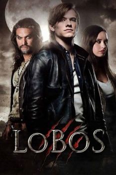

Lobos (2014)


Unleash the beast

Avaliação (TMDb):


5.9/10 (206 votos)
Avaliação (Usuário):
Outro Título:Wolves (Título Original)
País:Canada, 90 minutos
Idiomas falados:Inglês, Português
Gênero(s):Terror, Ação
Diretor(s):David Hayter
Codec:MPEG-2 (DVD)
Número: 1929
Sinopse:
Um jovem (Lucas Till) que se transforma em lobisomem e é falsamente acusado de assassinar seus pais. Na fuga, ele chega a uma cidadezinha chamada Lupine Ridge, onde eventos sobrenaturais acontecem. Jason Momoa interpreta o lobisomem chefe da cidade.
Elenco:
Lucas Till, Jason Momoa, John Pyper-Ferguson, Stephen McHattie, Merritt Patterson, Janet-Laine Green, Melanie Scrofano, Kaitlyn Leeb, Adam Butcher, Philip Maurice Hayes
Tipo de mídia: DVD5,
Legendas: Português
Alugado: Não
Tela: 2.35:1